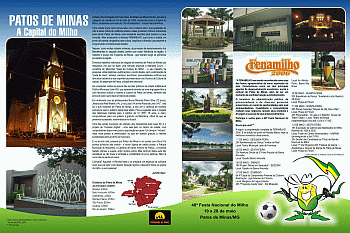
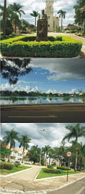

Cidade pólo da Região Alto Paranaíba, do Estado de Minas Gerais, elevada à categoria de cidade em 24 de maio de 1892, conhecida como a Capital do Milho, atualmente com mais de 135 mil habitantes*: nossa Patos de Minas.
Uma cidade limpa, bem estruturada, com comércio ativo, boa qualidade de vida e baixo índice de violência urbana: esses já seriam motivos suficientes para tornar Patos de Minas uma excelente escolha para turismo e para moradia.
Mas acrescente a famosa festa FENAMILHO, que torna a cidade um ponto de parada obrigatória para cultura, negócios e diversão (acompanhe a programação completa nesta edição).
Nasceu, como muitas cidades mineiras, do processo de desbravamento dos bandeirantes e, seguido destes, porém com maior influência na região, o trabalho e pouso dos Tropeiros de Minas - que fizeram surgir os primeiros povoados na região.
Diversos trabalhos valorosos de resgate da memória de Patos de Minas são realizados (há que se fazer uma menção especial à Marialda Coury - curadora do Memorial “Casa da Cultura do Milho” - e seu trabalho de pesquisa, artes plásticas e publicações), e junto destes, vem a valorização da “prata da casa”: artistas, cantores, escritores, personalidades políticas que tem seus trabalhos e sua importância preservados nos Centros de Cultura da cidade.
Se depender de Patos, o Brasil tem memória! As constantes visitas de alunos das escolas públicas da cidade à Biblioteca Pública Municipal João XXIII, que apresenta através de uma linguagem fácil e com recursos lúdicos a história e cultura de Patos de Minas, também são prova do valor que é dado à história da cidade.
Em entrevista com a adolescentes, não há o que reclamar de Patos de Minas, a não ser a carência de eventos exclusivos para o público desta faixa etária. Fica a sugestão para o resgate das deliciosas matinês para o público de 12 “ATÉ” 18 anos, e claro, computadores para uso público e gratuito na Biblioteca, afinal há que se preservar o passado, mas embarcar no futuro!
 Uma das ações louváveis da Câmara dos Vereadores para esse fim é o projeto de “Inclusão Digital” - uma sala bem no centro da cidade, com computadores disponíveis para a população em geral. Em tempos “virtuais”, nada mais prático e democrático do que ter acesso gratuito à internet possibilitado pelo governo do município.
Uma das ações louváveis da Câmara dos Vereadores para esse fim é o projeto de “Inclusão Digital” - uma sala bem no centro da cidade, com computadores disponíveis para a população em geral. Em tempos “virtuais”, nada mais prático e democrático do que ter acesso gratuito à internet possibilitado pelo governo do município.
E no mundo real, passear por Patos de Minas é um prazer aos olhos! Os pontos turísticos são muitos - e todos dignos de cartão postal: o Parque Municipal do Mocambo, a Catedral de Santo Antônio de Pádua , a Avenida Getúlio Vargas, a Lagoa, entre muitos outros. Mas nenhum deles seria tão agradável se não fosse a simpatia e cordialidade do povo patense. Não há como não se sentir em casa! Culinária? Aguarde.
A Revista Mais’s vai preparar um especial da culinária local, que vai fazer você desistir daquele regime e descobrir todos os gostos do milho - o ouro patense!